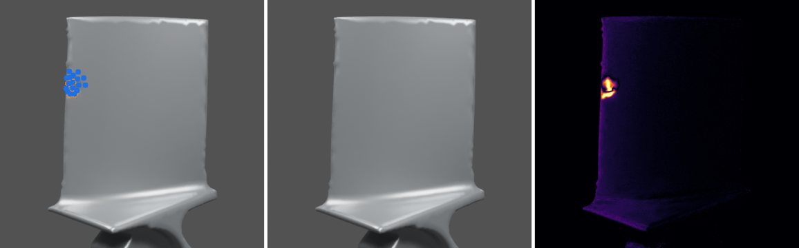
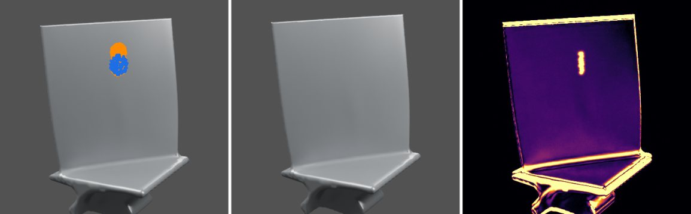

The basic idea
A jet engine turns the chemical energy of fuel into thrust by throwing air backwards very fast. Pushing air back pushes the engine forward: Newton’s third law. The jet engine was invented independently by Frank Whittle and Hans von Ohain in the 1930s.
Four types of engine
All gas-turbine engines share the same core (compressor, combustor, turbine). They differ in what that core drives.
Ramjets and scramjets have no rotating parts at all: the aircraft’s own speed compresses the air, so they only work once already flying fast (Mach 1–5 and 4–12).
The turbofan, step by step
Follow the air through the engine. Choose a step:
Where the thrust comes from
It is tempting to think the hot exhaust does the work. In a modern turbofan it does not: most of the thrust comes from the large mass of cooler air that the fan pushes around the core.
Bypass ratio
The bypass ratio is the mass of air that flows around the core divided by the mass that flows through it. Higher bypass ratios mean better fuel economy and less noise, at the cost of a bigger fan.
Key components
| Component | What it does | Typical numbers |
|---|---|---|
| Fan | Accelerates a large mass of air; most of it bypasses the core | 18–24 blades; tip speed over 1,000 mph; 61–134 in diameter |
| Compressor | Squeezes the core air in low- and high-pressure sections | 8–14 stages; pressure ratio 30:1–50:1 |
| Combustor | Burns fuel continuously; usually an annular chamber | 3,000–3,600 °F; only ~25% of its air takes part in burning |
| Turbine | Extracts energy to drive the compressor and fan | 10,000–15,000 rpm; single-crystal superalloy blades running hotter than their melting point, kept alive by cooling |
| Nozzle | Accelerates the remaining gas | Fixed or variable geometry |
| Gearbox (geared fans) | Lets the fan turn slower than the turbine | 15–20% efficiency gain (e.g. PW1000G) |
Where blades get damaged
Every stage contains rows of precision blades, and each region of the engine damages them in its own way. Engines are built to swallow a 4-pound bird and to run 25,000–50,000 hours between major overhauls, so regular blade inspection is a core part of keeping them safe.
Inspecting blades from photos
Inspectors look at blades through borescopes and photographs. The difficulty is that a dark spot in a photo can be real damage, a harmless stain, a lighting change or a slightly moved camera. My research, BladeDelta, compares a few calibrated photos with the blade’s healthy CAD model, and reports damage in 3D only when the photos can prove it; otherwise it says “not enough evidence”.



Sources
Engine facts and numbers are paraphrased from The Flying Engineer, “How do jet engines work?”, AerospaceAnswers, “What is a jet engine?” and HowEnginesWork, “Jet engines”. Values are typical ranges for modern engines, not data for a specific engine. Diagrams are simplified and not to scale. Inspection results are from the BladeDelta experiments.